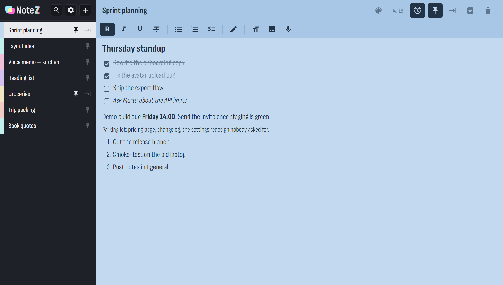
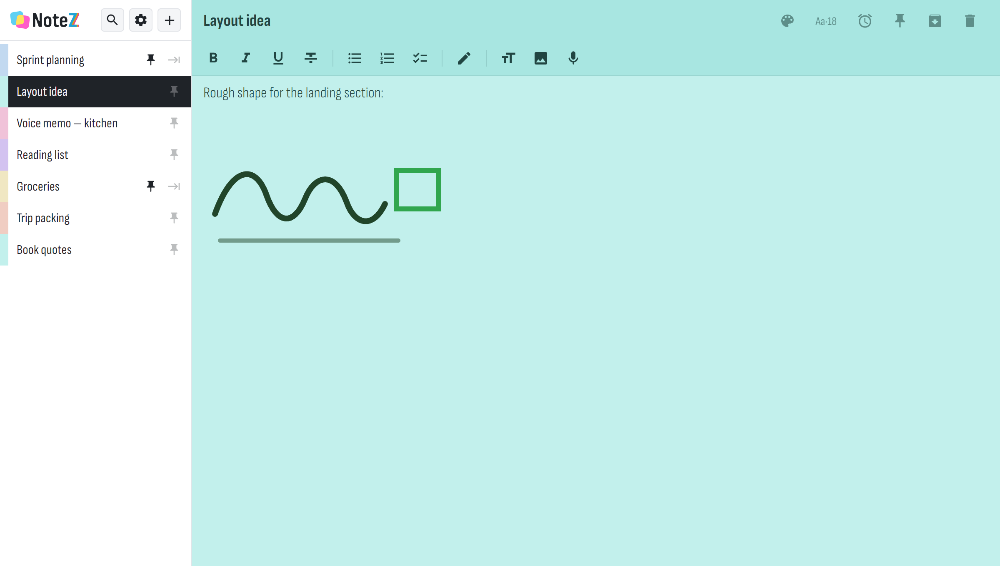
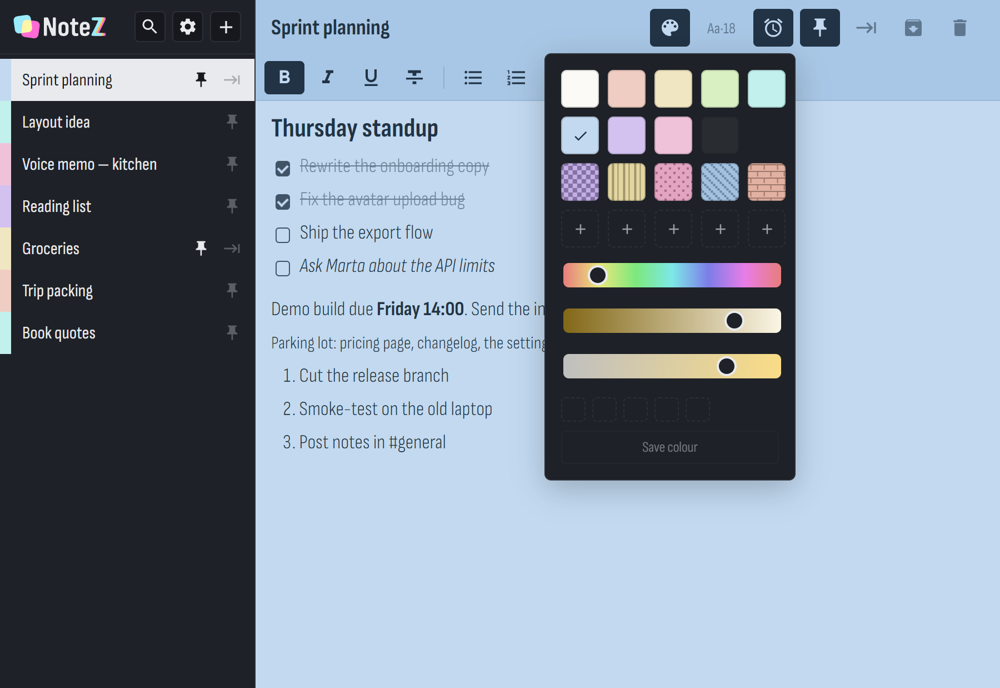
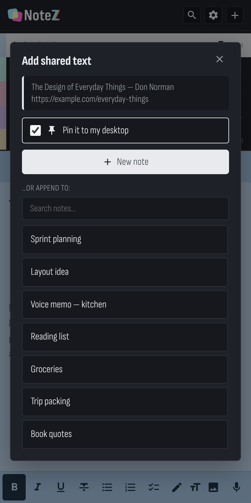
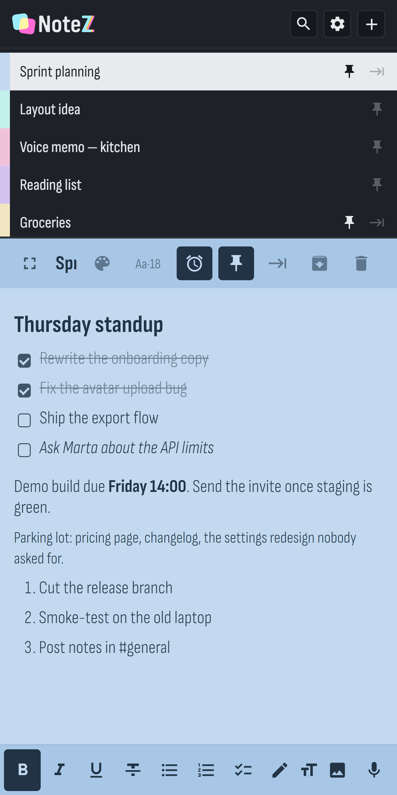

it stays while you scroll
Write it, sketch it or say it on your phone — then pin it, and it appears on your PC screen, on top of everything, waiting for you. Your notes live in your own Google Drive as ordinary files, and nowhere else.
Free · no account with us · v0.18.12 · 15 Sep 2026

Windows · dark theme · the note keeps its own colour
Typed, drawn, photographed or spoken — one note holds all of it, and all of it syncs.
Strokes are shaped by speed and pressure, so a quick sketch looks like a pen rather than a wobble. Erase whole strokes, drop a photo underneath, draw on top of it.

Even steps around the colour wheel at one saturation, plus paper and graphite. When none of them is right, slide hue, shade and saturation until it is.

Press record and talk. The clip lands in the note as a player, small enough to sync in a blink.
Pinned notes float above your work, always on top, each with its own transparency.
Filters the list as you type, through titles and note text. No folders, no tags to keep tidy.
Send text, a link or photos from any Android app — as a new note, or added to the end of one you pick.
Tick things off as you go. Done items fade and strike through; the widgets show the boxes too.
Pick a time and the note comes to you: pinned on your PC screen, and a notification on your phone.
Put a note away without deleting it. Still searchable, one tap to bring back, with Undo if you slip.
Ctrl+K and a few letters of it. No scrolling through the list.
The thing NotezZz does that a notes app usually can't: put something from your hand onto the monitor you're about to sit in front of.
Share a link, an address or a paragraph from any Android app, tick Pin it to my desktop, and it's already waiting as a sticky note on your PC when you get there — no messaging yourself, no email to yourself.

Pinning is a property of the note, not of one machine. Tap the pin on your phone and the sticky opens on your PC by itself; unpin anywhere and it closes.
The list sits above the note so you can move between them without leaving the keyboard. Expand a note full-screen when it deserves the room.

There is no NotezZz server and no NotezZz account, because there's nothing for us to run. Your notes are files in one folder of your own Drive — or only on your device, if you'd rather not sign in at all.
drive.file is the most
restricted permission Google offers: it reaches only files the app itself created. NotezZz
cannot list or read the rest of your Drive — that's enforced by Google, not
promised by us.
Want no cloud at all? Open it without signing in. Your notes never leave the device; the Windows and Android apps only ask GitHub whether a newer version exists. Privacy policy · Terms
Sticky notes, tray icon, launch on startup, optional Google sync.
Download installerWindows 10 / 11 · 64-bit · v0.18.12 · 15 Sep 2026
The phone app, with share-to, home-screen widgets and Google sign-in. Updates itself.
Download the appAndroid 7 or newer · v0.21.0 · 29 Sep 2026
Any modern browser, nothing to install. Add it to your home screen if you like.
Open the web appChrome menu → Add to Home screen
First run on Windows: the installer isn't code-signed yet, so Windows may say “Windows protected your PC” — choose More info → Run anyway. If you sign in with Google, Windows also asks once to allow a local connection; that's the loopback address Google returns your sign-in to, not a service listening to the world.
First install on Android: the app comes from here rather than the Play Store, so your browser asks once to allow installing apps from it. After that, NotezZz offers its own updates, and Android only accepts them if they carry the same signature.